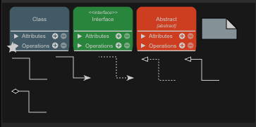
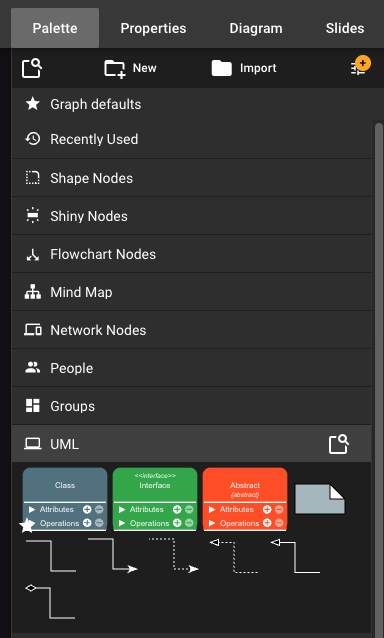

Programmering nivå 2
Kap 3.5 – UML för objektmodeller
Planera objektorienterade program med klassdiagram, attribut, metoder och relationer.
Mål med lektionen
När du har arbetat klart med denna lektion ska du:
- Förstå vad ett UML-klassdiagram är och hur det används för att planera programstruktur.
- Kunna tolka enkla UML-diagram och koppla dem till kod.
- Kunna skapa egna UML-klassdiagram med attribut, metoder och relationer.
Så här lär du dig bäst
UML är inte kod. Det är ett visuellt språk för att strukturera din kod innan du skriver den. Studera exemplen noggrant och försök sedan att omvandla UML till kod, eller kod till UML. UML hjälper dig att få överblick och planera logiskt.
Centrala begrepp
- UML: ett standardiserat sätt att rita upp system och programstruktur.
- Klassdiagram: en UML-modell som visar klasser, attribut, metoder och relationer.
- Attribut eller fält: variabler som hör till en klass eller ett objekt, till exempel
self.nameellerself.balance. - Metoder: funktioner som hör till en klass eller ett objekt.
- Association: en relation mellan två klasser.
- Arv: en relation där en klass ärver från en annan.
UML för objektmodeller
Ett klassdiagram visar ofta varje klass som en ruta med tre delar:
- klassens namn,
- attribut, alltså fält eller variabler,
- metoder, alltså funktioner eller beteenden.

De vanligaste symbolerna används så här:
- Class: en vanlig klass. Den används för klasser som du kan skapa objekt av.
- Interface: en beskrivning av metoder som andra klasser ska följa. Du behöver inte använda interface i de första exemplen.
- Abstract: en abstrakt klass. Den används som gemensam grund för andra klasser och är mer avancerad.
- Enkel pil: i den här kursen använder du bara vanlig pil,
-->, för relationer mellan klasser.
Bilden visar flera UML-symboler, men i den här kursen ska du bara använda den enkla pilen
-->. Skriv en kort etikett efter kolon, till exempel inherits,
has eller
owns. has betyder "har" och owns betyder "äger" eller
"ansvarar för".
Exempel: klassdiagram för Dog
classDiagram
class Dog {
-string name
-int age
+bark() void
+haveBirthday() void
}Samma klass kan skrivas så här i Python. Attributen i diagrammet motsvarar
self._name och self._age i koden, och metoderna motsvarar
funktionerna som ligger inne i klassen.
class Dog:
def __init__(self, name, age):
self._name = name
self._age = age
def bark(self):
print("Voff!")
def have_birthday(self):
self._age += 1
dog = Dog("Fido", 3)
dog.bark()
dog.have_birthday()Symbolerna betyder:
+betyder publik.-betyder privat.#betyder skyddad, alltså protected.- Typen, till exempel
stringellerint, visar vilken datatyp attributet har.
I UML skrivs metodnamn ofta som haveBirthday() eller printInfo(). I Python
använder man oftast snake_case, till exempel have_birthday() och
print_info().
Relationer mellan klasser: arv
Här visar den enkla pilen att Dog ärver från Animal. Etiketten
inherits förklarar relationen.
classDiagram
Dog --> Animal : inherits
class Animal {
+speak() void
}
class Dog {
+bark() void
+speak() void
}I Python syns arvet genom parentesen efter klassnamnet: class Dog(Animal).
Då kan Dog använda och skriva över metoder från Animal.
class Animal:
def speak(self):
print("Djuret gör ett ljud.")
class Dog(Animal):
def bark(self):
print("Voff!")
def speak(self):
print("Hunden skäller.")
dog = Dog()
dog.speak()
dog.bark()Association mellan klasser
Association betyder att två klasser har en koppling. En skola kan till exempel ha flera studenter.
classDiagram
School --> Student : has
class Student {
-string name
-int age
+printInfo() void
}
class School {
-string name
-string city
-list students
+addStudent(student) void
}I koden visas associationen genom att ett School-objekt sparar
Student-objekt i en lista.
class Student:
def __init__(self, name, age):
self._name = name
self._age = age
def print_info(self):
print(f"{self._name}, {self._age} år")
class School:
def __init__(self, name, city):
self._name = name
self._city = city
self._students = []
def add_student(self, student):
self._students.append(student)
student = Student("Anna", 17)
school = School("Pauliskolan", "Malmö")
school.add_student(student)Exempel: bankapplikation
En enkel bankmodell kan innehålla kunder, konton och en bank. Diagrammet visar att en bank har kunder och att en kund kan ha konton.
classDiagram
Bank --> Customer : has
Customer --> Account : owns
class Bank {
-string name
-list customers
+addCustomer(customer) void
+findCustomer(name) Customer
}
class Customer {
-string name
-string customerId
-list accounts
+addAccount(account) void
+getAccounts() list
+getName() string
}
class Account {
-string accountNumber
-float balance
+deposit(amount) void
+withdraw(amount) bool
+getBalance() float
}Här är en förenklad kodversion av samma modell. Lägg märke till att listorna visar relationerna: banken har kunder och kunden har konton.
class Account:
def __init__(self, account_number, balance):
self._account_number = account_number
self._balance = balance
def deposit(self, amount):
if amount > 0:
self._balance += amount
def withdraw(self, amount):
if 0 < amount <= self._balance:
self._balance -= amount
return True
return False
def get_balance(self):
return self._balance
class Customer:
def __init__(self, name, customer_id):
self._name = name
self._customer_id = customer_id
self._accounts = []
def add_account(self, account):
self._accounts.append(account)
def get_accounts(self):
return self._accounts
def get_name(self):
return self._name
class Bank:
def __init__(self, name):
self._name = name
self._customers = []
def add_customer(self, customer):
self._customers.append(customer)
def find_customer(self, name):
for customer in self._customers:
if customer.get_name() == name:
return customer
return None
bank = Bank("Skolbanken")
customer = Customer("Erik", "C001")
account = Account("1001", 500)
customer.add_account(account)
bank.add_customer(customer)Öva: analysera och skapa UML
- Skapa ett klassdiagram för en enkel bankapplikation med klasserna
Customer,AccountochBank. - Visa vilka attribut och metoder som varje klass har.
- Rita ut associationer, till exempel att en kund kan ha flera konton.
- Skriv också Python-koden som hör ihop med UML-diagrammet.
- Omvandla ett tidigare program du skrivit till ett UML-diagram.
När du har försökt själv kan du jämföra med ett lösningsförslag: UML-diagram och nedladdningsbar Python-kod.
Verktyg att använda
Du kan rita UML för hand eller med digitala verktyg.
- yEd Live - gratis webbsida där du kan rita diagram direkt i webbläsaren.
Film: yEd Live
Kort guide: rita UML i yEd Live
- Öppna yEd Live och välj Launch.
- Skapa ett nytt tomt diagram.
- Välj Palette -> UML för att visa UML-symbolerna.
- Lägg in en klassruta för varje klass, till exempel
Bank,CustomerochAccount. - Skriv klassens namn överst i rutan. Skriv attribut under namnet, till exempel
- nameoch- balance. - Skriv metoder längst ner i rutan, till exempel
+ deposit(amount)och+ getBalance(). - Dra linjer mellan klasserna för att visa relationer. Exempel:
Bankhar kunder ochCustomerhar konton. - Använd automatisk layout om diagrammet blir rörigt. yEd Live har färdiga layouter, bland annat för UML.
- Spara ofta. Välj gärna GraphML om du vill kunna öppna och redigera diagrammet igen senare. Google Drive går också bra om det fungerar på din dator.
- Exportera diagrammet när det är klart. yEd Live kan exportera till till exempel PNG, SVG och PDF.

yEd Live körs i webbläsaren och är gratis att använda. Enligt yWorks skickas diagramdata inte till deras servrar om du inte själv väljer molnlagring eller AI-stöd.
Sammanfattning
- UML-klassdiagram visar klasser, attribut, metoder och relationer visuellt.
- De hjälper dig att planera, förklara och strukturera din kod.
- Arv, association och inkapsling kan visas grafiskt.
- UML är ett kraftfullt analysverktyg för objektorienterad programmering.